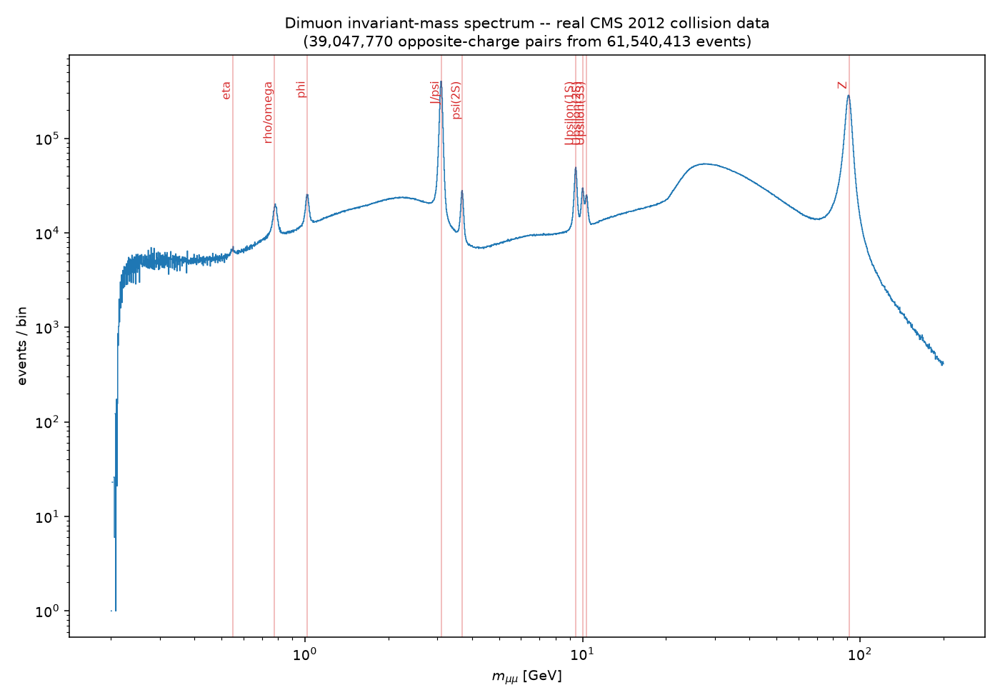

CMS Open Data · Technical report
We compute the dimuon invariant-mass spectrum from the full CMS 2012 DoubleMuParked dataset (Run2012B+C, 8 TeV proton-proton collisions) released on the CERN Open Data Portal — real detector data, not simulation. Streaming all 61,540,413 events over HTTP with the Scikit-HEP stack (uproot, awkward, vector), we select opposite-charge muon pairs and histogram their invariant mass on a logarithmic scale, recovering 39,047,770 dimuon pairs. The resulting spectrum shows eight resonance peaks — the $\rho/\omega$, $\phi$, $J/\psi$, $\psi(2S)$, the $\Upsilon(1S,2S,3S)$ triplet, and the $Z$ boson — each located to better than 1% mass accuracy against Particle Data Group values, with no calibration corrections applied. This is a direct, independent reproduction of a classic CERN Open Data analysis, using real 2012 LHC collision data and the same open-source tooling used by CMS collaborators (including DESY, one of CMS's largest member institutes).
When two protons collide at high energy, most of the resulting particles decay before reaching a detector. Some of the intermediate states — bound quark-antiquark pairs such as the $J/\psi$ ($c\bar{c}$) and the $\Upsilon$ family ($b\bar{b}$), light mesons such as the $\rho$, $\omega$, and $\phi$, and heavy gauge bosons such as the $Z$ — occasionally decay to a muon-antimuon pair. Because each of these states has a fixed, known rest mass, the invariant mass of every muon pair reconstructed in a detector clusters at these values, producing sharp peaks above a smooth combinatorial background of unrelated muon pairs. Histogramming this quantity across a large collision dataset — the dimuon spectrum — is one of the most direct, least model-dependent ways to see fundamental particle physics in real data, and is a standard first analysis exercise on CERN Open Data.
The source is the CMS 2012 DoubleMuParked dataset (Run2012B+C, $\sqrt{s}=8$ TeV), released via the CERN Open Data Portal [1] as a pre-skimmed NanoAOD-Outreach-Tool ROOT file — the same file used in ROOT's official df102_NanoAODDimuonAnalysis tutorial [2]:
https://opendata.cern.ch/eos/opendata/cms/derived-data/AOD2NanoAODOutreachTool/
Run2012BC_DoubleMuParked_Muons.rootThe file contains 61,540,413 real collision events (2.24 GB), each with per-event arrays of reconstructed muon $p_T$, $\eta$, $\phi$, mass, and charge. The file is streamed directly over HTTP with uproot [5] in bounded entry ranges; it is never downloaded or persisted — only the derived histogram (tens of kilobytes) and a small event sample are kept. Data are public domain (CC0).
For every event with two or more reconstructed muons, the first two muon candidates as stored are taken, opposite electric charge is required ($q_1 q_2 < 0$), and the invariant mass of the dimuon system is computed by four-momentum (Lorentz-vector) addition,
$$M_{\mu\mu} = \sqrt{(E_1+E_2)^2 - |\vec{p}_1+\vec{p}_2|^2},$$using the vector library's Momentum4D behaviour on Awkward Arrays [6][7] — each muon's $(p_T,\eta,\phi,m)$ is converted to a four-vector and the addition and mass extraction are vectorised across every event in a chunk simultaneously. Masses are accumulated into a 2000-bin logarithmic histogram spanning $0.2$–$200$ GeV across the full dataset.
Reading the whole file in a single high-level iterate() call failed with a transport-layer error before completing even the first chunk of the remote HTTP stream. The working pipeline instead:
In practice the background process was interrupted by the execution environment's time limits several times over the course of processing; each restart resumed automatically from the last checkpoint with no data loss, until the full file was processed.
For each expected resonance, the peak bin within a small window around its literature mass is located, and refined by parabolic interpolation using the peak bin and its two neighbours $(x_0,y_0),(x_1,y_1),(x_2,y_2)$:
$$m_{\text{meas}} = x_1 + \frac{1}{2}\cdot\frac{y_0-y_2}{y_0-2y_1+y_2}\cdot\frac{x_2-x_0}{2}.$$This sub-bin estimate is compared to the corresponding Particle Data Group (PDG) mass [4].

| Resonance | PDG mass (GeV) | Measured (GeV) | Residual | Residual (%) |
|---|---|---|---|---|
| $\rho/\omega$ | 0.775 | 0.7813 | +0.0063 | +0.81% |
| $\phi$ | 1.019 | 1.0166 | -0.0024 | -0.24% |
| $J/\psi$ | 3.097 | 3.0938 | -0.0032 | -0.10% |
| $\psi(2S)$ | 3.686 | 3.6810 | -0.0050 | -0.13% |
| $\Upsilon(1S)$ | 9.460 | 9.4519 | -0.0081 | -0.09% |
| $\Upsilon(2S)$ | 10.023 | 10.0144 | -0.0086 | -0.09% |
| $\Upsilon(3S)$ | 10.355 | 10.3370 | -0.0180 | -0.17% |
| $Z$ | 91.190 | 90.9217 | -0.2683 | -0.29% |
All eight resonances are recovered to better than 1% mass accuracy with no muon momentum-scale calibration applied — strong quantitative confirmation that the spectrum reflects genuine physics rather than an artefact of the selection or binning.
python3 src/dimuon_spectrum.py # streams the full file; resumable via a checkpoint
python3 src/analyze_peaks.py # quantitative peak-position validation against PDG valuesRequires uproot, awkward, vector, numpy, matplotlib (the Scikit-HEP stack). Outputs: outputs/dimuon_spectrum.png, outputs/run_summary.json, outputs/peak_validation.json.